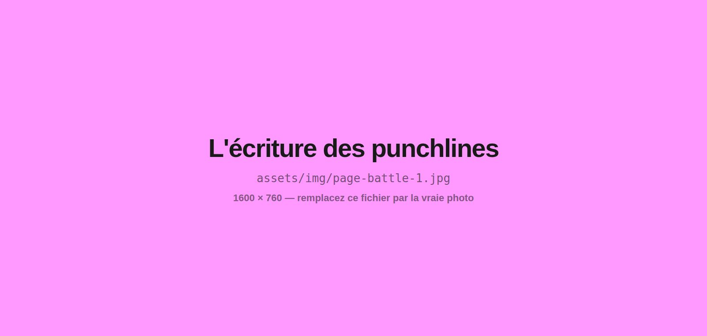
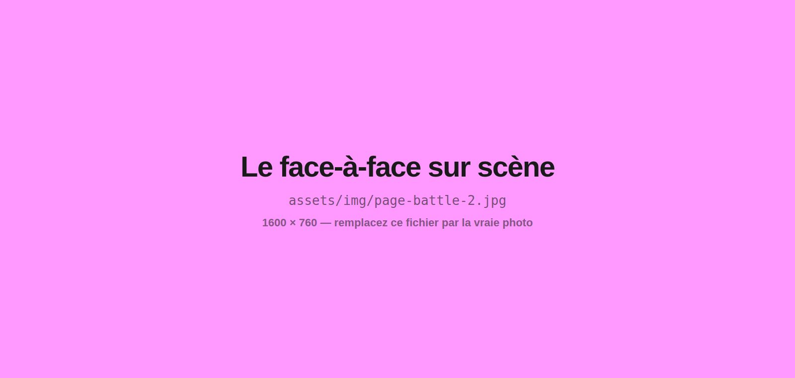

Battle de compliments
Le battle de rue, retourné : deux artistes s'affrontent à coups d'éloges devant un public qui encourage.
Une discipline insolite qui met le verbe à l'honneur dans un exercice rhétorique positif. Le principe est simple, la mécanique redoutable : elle emprunte aux codes de la vanne et de la punchline pour les retourner en éloge. Et contrairement à ce qu'on imagine, rien ne s'improvise — les textes s'écrivent, se retravaillent et se resserrent avant de passer devant les autres.
Comment se déroule un parcours
Poser les règles
Deux adversaires, un temps donné, un public qui encourage. Les mêmes codes que le battle de rap, avec une seule inversion : on ne cherche pas à démolir, on cherche à flatter.
Travailler le mot fort
Le verbe, la verve, l'image qui frappe. On cherche l'adjectif juste plutôt que l'adjectif fort — et on apprend surtout à peser ses mots : un compliment mal ajusté tombe à plat aussi sûrement qu'une vanne ratée.
Écrire ses punchlines
Chacun écrit, relit, resserre. C'est un atelier d'écriture avant d'être un exercice de scène : la répartie se prépare, et c'est ce travail en amont qui la rend vive le jour du passage.
Passer en binôme
Les face-à-face s'enchaînent, courts et rythmés. Le public crie à chaque punchline valorisante : c'est lui qui porte l'énergie de la salle, et personne n'est noté.
Finir par un vrai battle
Je clôture le parcours par un battle contre un·e collègue, devant le groupe. Voir des professionnels se prêter à l'exercice qu'on vient de vivre change le regard qu'on porte sur son propre passage.

Les objectifs travaillés

Le battle
Le battle est un héritage direct de la culture hip-hop, où deux MC s'affrontent verbalement devant un public. Le battle de compliments en conserve la forme — le face-à-face, le rythme, l'énergie collective — en inversant l'intention. Les textes sont écrits et travaillés en amont : on y affine le verbe, la verve et le mot fort, et on apprend à peser ses mots.
Et côté équipe pédagogique
C'est le format le plus demandé en médiation et en cohésion de groupe. Il désamorce les moqueries en en détournant les codes, et fonctionne particulièrement bien en début d'année ou à la suite d'un conflit de classe. Le travail d'écriture qu'il demande en fait aussi un vrai support de français.
Questions fréquentes
Ce qu'on me demande le plus souvent avant de lancer un projet battle de compliments.
Un face-à-face verbal emprunté aux battles de rap, avec une seule inversion : au lieu de chercher à démolir l'autre, on cherche à le valoriser. Mêmes codes, même énergie, même public qui réagit — mais chaque punchline est un éloge.
Non, et c'est la surprise de l'atelier : tout est écrit. On travaille le verbe, la verve et le mot fort, on réécrit, on resserre. C'est un atelier d'écriture avant d'être un exercice de scène, et c'est justement ce travail en amont qui rend la répartie vive le jour du passage.
C'est exactement ce que la forme désamorce, en détournant les codes de la vanne. On apprend à peser ses mots : un compliment mal ajusté tombe à plat aussi sûrement qu'une vanne ratée. Le public n'est pas un jury — il encourage, et il crie à chaque punchline valorisante.
L'atelier fonctionne avec tout public. Il est particulièrement efficace avec les groupes où la moquerie tient une place, ce qui le rend souvent pertinent dès la fin du primaire et sur tout le collège — mais il marche aussi très bien avec des adultes, en cohésion d'équipe.
Oui, une découverte tient en quelques heures. Le format complet, autour de 10 h, laisse le temps d'écrire vraiment, de réécrire et de préparer une scène de fin. Sur un format court, on garde l'écriture et le passage, sans la phase de réécriture.
Oui. Il vous suffit de me contacter pour discuter de votre projet : l'offre est disponible sur la plateforme ADAGE quelques heures après notre échange. Je suis également agréé par l'Éducation nationale.
Les autres interventions
Donnez à vos élèves l'envie des mots
Plus de 300 ateliers menés et 5 000 participants rencontrés, dans toute la France. Décrivez-moi votre contexte, je réponds avec une proposition adaptée.